INFO
Astro Mosaic is a tool for planning telescope observations. It shows a visual view of the target using a selected telescope, visibility during the night and it can calculate mosaic coordinates.
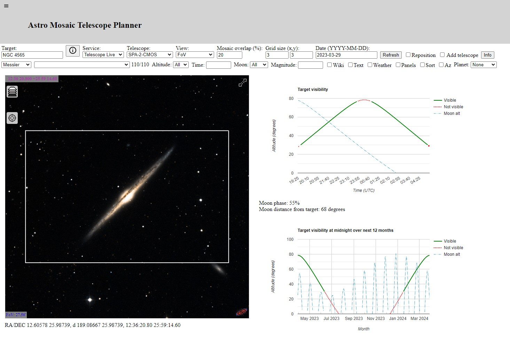{kind=link}
Tool includes
- Visual view of target using Aladin Sky Atlas
- Target name resolution using Sesame interface
- Field of View (FoV) view of target with a chosen remote telescope
- View and calculate mosaics coordinates up to 10x10 size
- Target visibility during the night with altitude and optional azimuth view
- Moon altitude and distance from the target
- Target and moon altitude over next 12 months
- Optional planet visibility during the night over next 12 months
- Moon path during the night is shown in the sky atlas
- Optionally planet path for the following four weeks is shown in the sky atlas
- Multiple telescope services are available by default
- Possibility to add own telescopes
- Catalog lists for selecting the target
- Filtering of catalog list based on altitude, time and distance from the moon
- Multiple target coordinate formats are supported:
- Hours and degrees:
- HH:MM:SS DD:MM:SS
- HH MM SS DD MM SS
- HH:MM:SS/DD:MM:SS
- HH MM SS/DD MM SS
- HHMMSS DDMMSS
- HH.dec DD.dec
- Decimal degrees:
- d DD.dec DD.dec
- A comma separated list can be given to show multiple targets
- A panel view to show multiple catalog objects
- Optionally catalog objects can be sorted by altitude
- Wiki interface to show target information
- Messier, NGC, IC, Sharpless, RCW, LDN, LBN, Barnard, Cederblad, Slooh 500, Simbad and NED catalog names on a map (optional)
- Object markers are clickable and print short info or a Wiki page
- Full screen control to show a bigger view of the map
- Control to change the map view
- Current seeing conditions on telescope location
- Current location view to show the sky map at the current location
Multiple telescope services
Currently Astro Mosaic supports Telescope Live, Slooh, RoboScopes, SkyGems, Hubble and James Webb Space Telescope (JWST) telescopes. Seestar, Vaonis, Unistellar Equinox and Dwarflab II smart telescopes are also listed. You can also add your own telescope (see page Astro Mosaic Configuration).
Direct links to telescope services are below.
- https://ruuth.xyz/AstroMosaic.html?service=Telescope%20Live
- https://ruuth.xyz/AstroMosaic.html?service=Slooh
- https://ruuth.xyz/AstroMosaic.html?service=RoboScopes
- https://ruuth.xyz/AstroMosaic.html?service=SkyGems
- https://ruuth.xyz/AstroMosaic.html?service=Hubble
- https://ruuth.xyz/AstroMosaic.html?service=JWST
- https://ruuth.xyz/AstroMosaic.html?service=Seestar
- https://ruuth.xyz/AstroMosaic.html?service=Vaonis
Tutorials
There are several interactive tutorials available that guide you through the main features of Astro Mosaic. You can find buttons that start tutorials at the bottom of the Astro Mosaic page.
Add own telescope
Own telescope can be added to Astro Mosaic with the Add telescope option. Telescope information includes telescope field of view and location. Telescopes added with the Add telescope option are not persistent so they disappear when Astro Mosaic is restarted.
To make the added telescope permanent you can use URL parameters to add the telescope each time Astro Mosaic has started. Using an Info button you can get a URL that includes the telescope information. That URL can be bookmarked to be able to quickly access your telescope settings in the future.
For other options to add your own telescope see a separate document Astro Mosaic Configuration.
Telescope field of view
AstroMosaic can show telescope field of view and mosaic grid view.
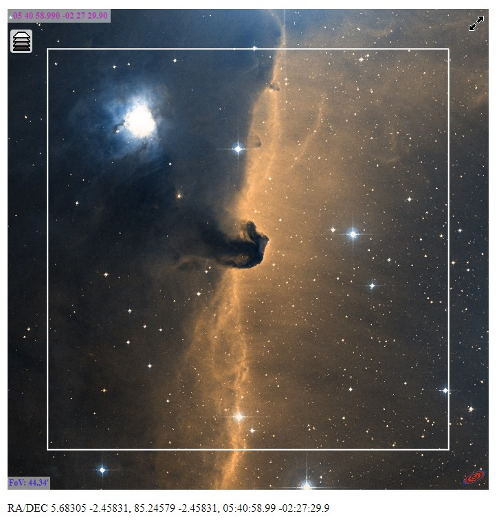 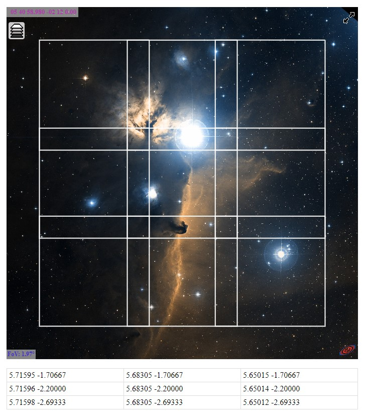{kind=link}
{kind=link}
Night and year visibility
AstroMosaic can show target altitude for a given night and also midnight altitude for next 12 months. Optionally it is possible to show target azimuth. Also moon altitude, phase and distance from the target is shown.
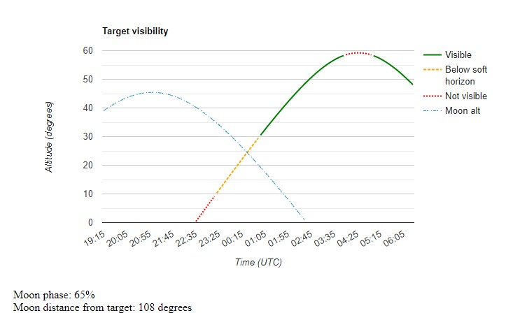{kind=link}
Target altitude and moon altitude.
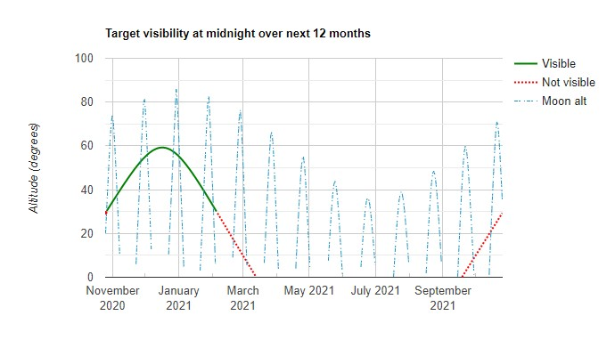{kind=link}
Target altitude and moon altitude at midnight for the next 12 months.
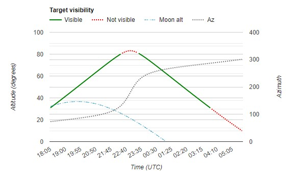{kind=link}
Target altitude, azimuth and moon altitude.
Multiple catalogs
Astro Mosaic supports the following catalogs.
- Messier
- NGC
- IC
- Sharpless
- RCW
- LDN
- LBN
- Barnard
- Cederblad
- Slooh 500 (only with Slooh service)
- Simbad (one degree view)
- NED (one degree view)
All catalog object names are added as a catalog layer to the map view. Each catalog object name is written next to that object on a map to make it easier to identify major objects in a map. Catalog map layers are disabled by default.
There are a total of 13959 NGC and IC objects that can be shown on the map. The Sharpless catalog has 313 objects listed mostly from the northern hemisphere. The RCW catalog has 182 objects listed mostly from the southern hemisphere. RCW catalog also includes objects from the Gum catalog.
Catalog object markers are clickable. When you click on a marker a short info is written on the panel to the right side of the map. If the Wiki check box is checked then the Wikipedia page of that object is shown when possible.
Filtering in catalog list
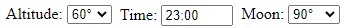{kind=link}
It is possible to filter catalog lists in a few ways.
- First filter is altitude where you decide how high the target needs to be during the night to be shown in the list.
- Then it is possible to filter by time. If there is for example only a specific time slot available the time filter can be used to show what other filter conditions are met at that specific time.
- With a moon filter it is possible to show only those targets that have at least the given distance from the moon. If the moon is up it can be useful for example to pick only targets that are at least 90 degrees from the moon.
Filtering points are calculated at midnight and then two and four hours before and after midnight. So in some cases it is possible that a target is not listed if it will match the filter only between those calculated points.
Sorting catalog list
It is possible to sort catalog lists by altitude when an altitude filter is enabled. It should help find those targets that have the best visibility at a selected time.
Panel view of catalog
Panel view shows 25 first catalog objects as separate panels. It allows an easy visual view to targets with the chosen telescope.
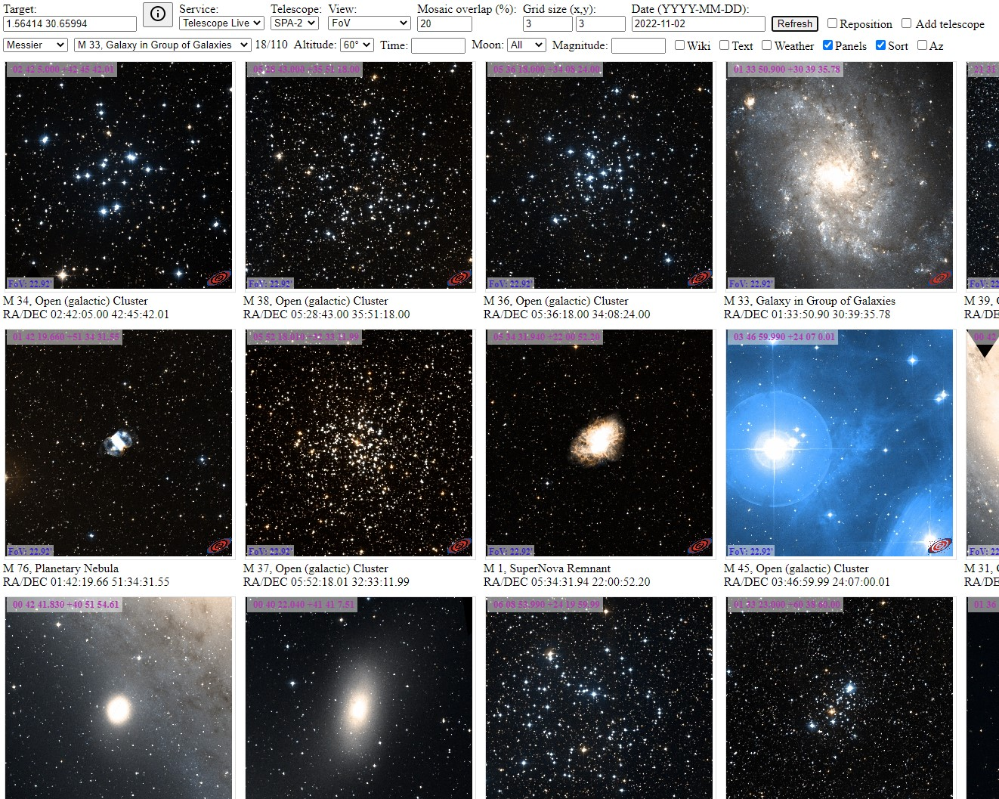{kind=link}
Controls on the map
- Catalog layer control button on the upper left corner can be used to enable or disable map layers. Also the base map can be changed there.
- A button to control full screen mode is at the top right of the map. This makes it easier to see a bigger picture when browsing the map.
Hovering and clicking
Most objects with a marker on the sky atlas respond to hovering and clicking. Hovering on the object shows an info line above the sky atlas. Clicking on the object shows a more detailed info table at the bottom of the screen.
Simbad pointer
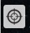{kind=link}
The Simbad pointer in the sky atlas can be used to click on any point in the sky and show the Simbad info of that point.
Visual reposition of the target
Reposition mode can be used to visually move current framing using the mouse. Reposition mode can be chosen by checking the Reposition box in the interface.
Reposition is useful also when searching for targets in the sky map. It is possible to center the current Aladin view position by checking the Reposition box and moving the image with the mouse. Note that if you have moved far away from the original position you need to click the Refresh button to update visibility charts.
Planet view
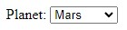{kind=link}
It is possible to choose a planet to be shown in the visibility charts. Planet path is also shown in the sky atlas.
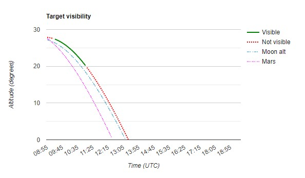{kind=link}
Moon and planet path on a map
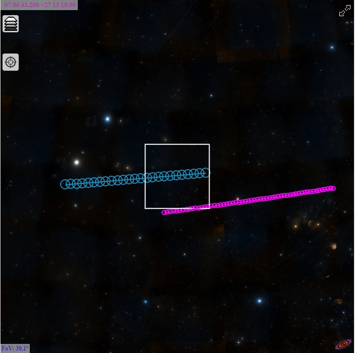{kind=link}
The moon and planet path is shown in the sky atlas. Moon path is shown for the selected night. If a planet is selected then the planet path is shown for the next four weeks. By clicking on the path it is possible to see a more detailed info table at the bottom of the screen.
Current location view
By selecting the Current location service it is possible to see the current night sky at a selected time. Current location requires access to the location service in the browser. With the Current location view no telescope FoV is shown. Instead a 45 degree radius circle is drawn on the sky map to make it easier to keep track of the location on the map.
The Current location view accepts also time in the date field. So it is possible to check the sky at a specific time.
The current location view has two virtual telescopes. Telescope Visual uses the date and time in the date field. Telescope Now uses the current time. Telescope now is useful when you want to check the sky at the current time without entering it into the data field. Both telescopes always overwrite the target field with the current sky location. Telescope now overwrites also the date field with the current date and time.
Current location assumes that the date field is given in local time.
Markers
It is possible to add one or more markers to the view by preceding coordinates with a special keyword marker. Markers work only with the ra/dec coordinate list and cannot be the first entry in the list.
Example of a target with a marked added: d 338.8958 39.4908, marker 22:35:52.28275 +39:38:03.5868
Configuring Astro Mosaic
Configuring Astro Mosaic using URL parameters is described in a document Astro Mosaic Configuration. It is possible for example to add your own camera and lens or telescope to Astro Mosaic.
Embedding Astro Mosaic
Embedding Astro Mosaic to a page is described in a document Astro Mosaic Configuration. It is possible to embed parts of Astro Mosaic in an Iframe by calling AstroMosaic.html with URL parameters or in a user given div section by loading script file AstroMosaicEngine.js and calling function AstroMosaicEngine.
Aladin API for visual view of target
Astro Mosaic would not be possible without Aladin Sky Atlas and Aladin Lite. Aladin Sky Atlas is a great interactive map created from digitized astronomical images. It is simply amazing that such a great resource is available. And it is totally free!
Aladin Lite provides HTML5 and programmable Javascript API interface to Aladin Sky Atlas. It makes it very easy to integrate into a web page. There are great examples and documentation to get started very quickly. For displaying images Aladin Lite uses preprocessed data from HiPS. HiPS (Hierarchical Progressive Surveys) is the hierarchical tiling mechanism which allows users to access, visualize and browse seamlessly image, catalog and cube data. There is 250TB of data available from different HiPS surveys.Sesame Name Resolver
Astro Mosaic uses Sesame service for resolving names. When a name like m101 is written into the target input box, a query is sent to the Sesame server to resolve the name. As a result Sesame server will return an XML page that contains target RA/DEC coordinates among other things. Sesame is actually an interface to other name resolvers: Simbad, NED and VizierR.
Calculating position of sun, moon and planets
There are very good resources available to calculate sun, moon and planet positions at a certain time and place. In Astro Mosaic that information is used to calculate for example moon position and altitude during the night, sun rise and set times and moon phase.
Perhaps the best resource is a page How to compute planetary positions written by Paul Schlyter. It has a lot of good and practical information. He has also another page Computing planetary positions - a tutorial with worked examples that has similar information. Those pages have all required information on orbital elements, coordinate transformations and such.
Moon phase
The moon phase shown in Astro Mosaic is based on its own calculations so it may not be exactly correct. It was very difficult to find a good example of that so Astro Mosaic just calculates the angle between sun and moon as seen from earth. That angle is then used to calculate the moon phase.
When the moon and sun are on the same side angle is zero degrees and moon phase is 0%, when they are on opposite sides the moon phase is 100% and when angle is 90 degrees phase is 50%. And other values are between those.
Wiki interface
Astro Mosaic can optionally show a Wiki page of the target. Wikipedia has an API that can be used to find a page id based on a search text. A surprisingly large number of Messier, NGC and IC targets has its own page at Wikipedia. If a page id is found then a mobile version of that page is shown in its own frame.
Astro Mosaic does some basic parsing on names before they are sent to Wikipedia search. For example messier objects can be written as m101 but they are translated to Messier 101. Also NGC and IC objects are formatted slightly before sending to Wikipedia.
History
Sometimes in 2018, very early in my astrophotography hobby, I wanted to image Western Veil Nebula. It did not fit into the telescope field of view so I started working on a three panel mosaic. I used Stellarium to approximately find correct coordinates. I managed to get the mosaic done but it was a very random process. I started to look for some tools to calculate mosaic coordinates but failed to find any free ones. So I decided to learn something new and do the coordinate calculations myself. I did the first version in Python but soon found out about Aladin Sky Atlas. With that I could do even better and see the actual framing on the sky atlas on a web page. After that I have added more functionality like visibility charts and different catalogs for finding targets.
Credits
- Many thanks to Daniele Risolo for the ideas and testing with planet view.
- Many thanks to Nick R for the ideas and code contributions to the visual reposition of the target.
- Interactive sky map is from Aladin Sky Atlas and Aladin Lite
- Name resolving by Sesame service
- Calculating position of sun and moon from Paul Schlyter How to compute planetary positions
- NGC and IC data from OpenNGC by Mattia Verga
- NGC and IC object distances are from Revised NGC/IC Data by Dr. Wolfgang Steinicke
- Sharpless data from The Best of Sharpless Catalog
- RCW data from Vizier
- RCW catalog B1950 coordinates converted to J2000 using info from Astronomical Coordinate Calculator version 0.31
- Messier catalog info from Sesame
- LDN data from Vizier
- LBN data from Vizier
- Barnard data from Vizier
- Cederblad data from Vizier
- Slooh 500 catalog list is from Slooh
- Catalog object type info from Sesame
- Seeing widget from meteoblue
- Telescope Live telescope info from Telescope Live
- RoboScopes telescope info from RoboScopes
- Slooh telescope info from Slooh
Links
Other useful or interesting links.